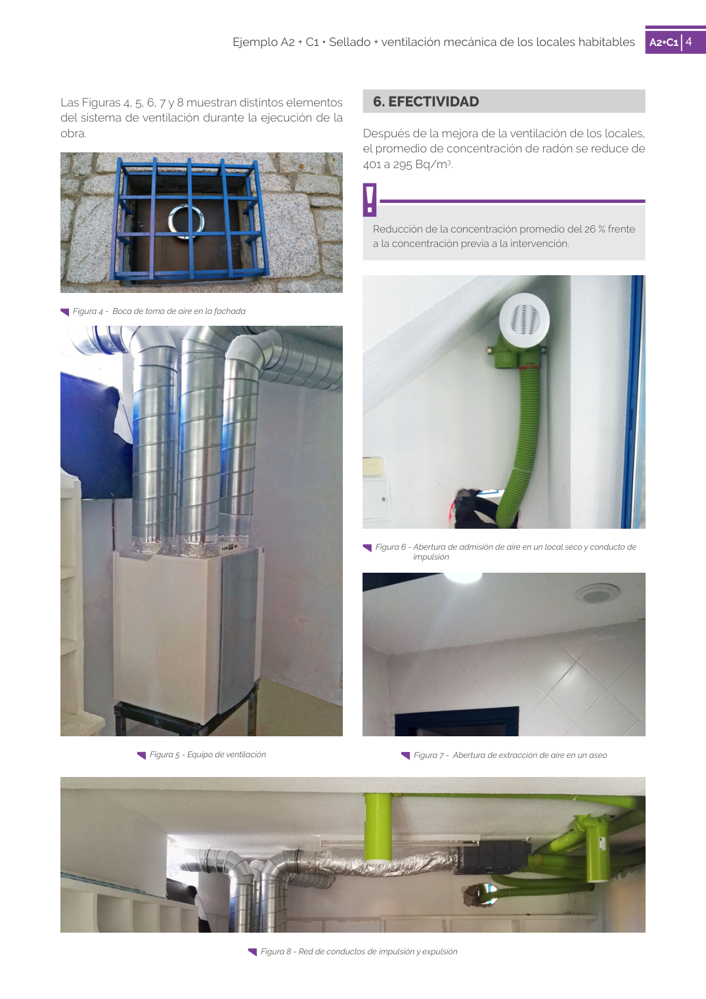

<!doctype html>
<html lang="es"><head><meta charset="utf-8">
<meta name="viewport" content="width=device-width, initial-scale=1">
<title>GUIA · 401 a 295 Bq/m3.</title><link rel="stylesheet" href="../estilo.css">
</head><body>
<nav><a href="../index.html">Índice</a> › <a href="../doc/guia-pdf-da44924e40b7-2018-9e66451d312d.html">GUIA</a> › 401</nav>

<header class="meta">
<p><a href="../doc/guia-pdf-da44924e40b7-2018-9e66451d312d.html">GUIA</a> · 401 a 295 Bq/m3. · versión 2018 · capa guia</p>
</header>
<div class="cita"><strong>Cita:</strong> GUIA · 401 · 401 a 295 Bq/m3. · páginas físicas pág. 4-5 (impresas: ['4', '5'])</div>
<p>Formatos: <a href="../../contenido/docs/GUIA-PDF-da44924e40b7/2018__9e66451d312d/apartado/a0012__401-a-295-bq-m3.json">JSON compacto</a> · <a href="../../contenido/docs/GUIA-PDF-da44924e40b7/2018__9e66451d312d/apartado/a0012__401-a-295-bq-m3.md">Markdown</a> · <a href="../../contenido/docs/GUIA-PDF-da44924e40b7/2018__9e66451d312d/fuente.pdf">PDF fuente</a></p>
<p><a href="../doc/guia-pdf-da44924e40b7-2018-9e66451d312d.html">Ámbito del documento</a> · <a href="../doc/guia-pdf-da44924e40b7-2018-9e66451d312d.html#ambito">texto del ámbito</a> ·
<a href="../doc/guia-pdf-da44924e40b7-2018-9e66451d312d.html">documento y tablas</a></p>
<nav><a href="guia-pdf-da44924e40b7-2018-9e66451d312d__a0011.html">← A2+C14 6. EFECTIVIDAD</a> <a href="guia-pdf-da44924e40b7-2018-9e66451d312d__a0013.html">A2+C15 →</a></nav>
<h1>401 401 a 295 Bq/m3.</h1>
<p>Tipo: tablas, figuras · nivel 1 · sección estimada: 401 a 295 Bq/m3. · padre: </p>
<pre class="literal">401 a 295 Bq/m3.
Reducción de la concentración promedio del 26 % frente
a la concentración previa a la intervención.
Las Figuras 4, 5, 6, 7 y 8 muestran distintos elementos
del sistema de ventilación durante la ejecución de la
obra.
Figura 5 - Equipo de ventilación
Figura 4 -  Boca de toma de aire en la fachada
Figura 6 - Abertura de admisión de aire en un local seco y conducto de
impulsión
Figura 7 -  Abertura de extracción de aire en un aseo
Figura 8 - Red de conductos de impulsión y expulsión

5
Ejemplo A2 + C1 • Sellado + ventilación mecánica de los locales habitables</pre>
<h2>Tablas en estas páginas</h2><ul><li>p. 5 · <a href="../../contenido/docs/GUIA-PDF-da44924e40b7/2018__9e66451d312d/tabla/p0005_t01.json">p0005_t01.json</a> · <a href="../../contenido/docs/GUIA-PDF-da44924e40b7/2018__9e66451d312d/tabla/p0005_t01.csv">.csv</a></li></ul><h2>Página visual</h2><figure><a href="../../contenido/docs/GUIA-PDF-da44924e40b7/2018__9e66451d312d/figura/p0004.png"></a><figcaption>Página visual 4 (fuente para fórmulas/tablas/figuras)</figcaption></figure><figure><a href="../../contenido/docs/GUIA-PDF-da44924e40b7/2018__9e66451d312d/figura/p0005.png"></a><figcaption>Página visual 5 (fuente para fórmulas/tablas/figuras)</figcaption></figure><p class="aviso">PDF fuente redistribuible: copia fiel enlazada en esta página (SHA256 verificado).</p>
<footer>Generado estáticamente desde JSON normalizado; sin JavaScript ni servicios externos.
El JSON es la fuente; este HTML es caché reproducible.</footer>
</body></html>
